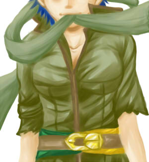

どうも、あけましておめでとうございます！！
と今頃……。
本館ではぼちぼち動いておりましたが、こっちを稼動させるのは久々です。新年第一弾の連載がこっちだなんて…私ってば今年もまたこんな調子……。
と、いうわけで、フォルアイ小説「浮雲」連載開始です。
以前掲載していた「血潮」の続編になります。
今度は暁ED後のお話になります。
暁ED後ってのはアイク的にはいろんなパターンが考えられる…とか思います。そんな中の一つのパターンってことで。
オフラインのほうも落ち着いたのでじわりとこっちの改装もしたいなあと。とりあえず、トップイラストを仕上げなきゃ。

途中経過。前にラフを載せたもの。
まだ塗りが完成していない…。なんとなく厚塗りを始めてしまった…。
これができたらサイトの改装したいなあと思います。
というわけで、以下より今回更新分について。 まだほんのさわりです！
フォルアイ、暁編…ってことで……
かなり説明パート多めになってしまいましたが、蒼炎はともかく、暁の話のあらすじをまとめてみて、なんかバラバラな話だなあとか思ったりしないでもない。うろ覚えで暁の本編の話をまとめてみたので矛盾とかあっても流してください！ なんかバラバラってのは…暁自体が視点変更する話だからなんだな。
そんな、本編のことはまあさておいて、書きたいのはこの先というか、アイクがフォルカを追っていく過程ですよ。シノンがちらりと登場していますが、次でもうちょっと絡みます。
意図しなかったことですが、シノアイ小説「地の果てまで」のパターンのちょうど逆をやっているようになる。シノアイではシノンがアイクを追っていきますが、こっちではアイクがフォルカを追っていきます。
そしてタイトル通り、アイクは燃え尽き症候群的な感じです。ふらーっとしています。ゆるやかに病んだ感じが出せたらなと…。
てなわけで、中編くらいの長さにはなるかなと思いつつ、だらりと書いていきますので、気長におつきあいくださいませ。